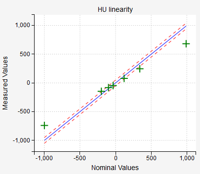

CT module¶
Al four catphan models that Pylinac can analyze are implemented:
Capthan 503
Catphan 504
Catphan 600
Catphan 604
When scanning the phantom follow Pylinac’s guidelines. Scan the whole phantom by placing the center of the phantom in the center of the image. Make sure it is well positioned, that is, aligned to the room lasers or other systems.
Note
The analysis of one single CT/CBCT scan with an axial length of 26 cm (approx. 130 slices with 2 mm slice thickness), and a resolution of 512x512 will take about 30 seconds to complete on a regular computer.
Options¶
- Select phantom
Select the phantom that you wish to analyze. Pylinac cannot determine the phantom model from the image, you must tell Pylinac which model you are using.
- Select imager
If you are using reference images, you can select the appropriate reference image for your imager. See the section “configuration” for more details about how to set the reference images.
- Analyze reference?
Chose whether you wish to analyze the reference image. If you chose to do so, the analysis will take twice as long.
- Show HU Delta?
If you check this box, the HU plot will show differences, and not absolute values of HU.
- Tolerances
Tolerances are defined in the configuration file.
Interpreting results¶
Each phantom model contains specific regions for studying different aspects of image quality. Models 504, 600 and 604 contain modules CTP404, CTP486, CTP528 and CTP515. Model 503 contains modules CTP404, CTP486 and CTP 528.
Note
The results of the analysis are gathered in tabs. Each module has its own tab. Next to the name of the module a pass/fail statement is given. A module gives general passing result if each submodule has passed the test. For example, the CTP404 module gives a passing result if the HU, LCV, slice thickness etc. have passed.
CTP528¶
This module is used to test the high-frequency contrast of the image. Eight line-pair regions are analyzed.

The relative transfer modulation function is calculated similarly to that of the Planar imaging module. Within the circular band containing the line-pair region, profiles are drawn and averaged for each region. From the profiles min and max pixel values are calculated. For region 2, say, there are three peaks and two valleys, and hence three max values will be averaged into one, and two min values will be averaged in to one. At the end, the rMTF for this region will be:

Where min and max are averaged min and max values.
If the difference between the reference and current rMTF (50)% is not greater than MTF tolerance, the test will pass.
CTP404¶
This module is used to test the low-frequency contrast, HU units and geometry of the image.
Note
Hover over the phantom image to reveal detected ROIs.
If a particular material has passed the HU test, it will be colored green, otherwise red. Blue circles are background ROIs.
A ROI has passed the test if the difference between nominal and current HU is less than HU and uniformity tol..
Note
CBCT scans normally give a failed status for the HU units.
Low contrast visibility is calculated in two ways. The LCV is calculated according to Pylinac. Here are the formulas:

The LCV will have a passing status if it is withing the LCV tolerance. In the configuration file you can chose whether this tolerance will be applied to LCV or LCV2.
Slice thickness will pass the test if the difference between the nominal value and the measured value is within Slice thickness tol. If your image is very noisy or of low quality in general, it may happen that Pylinac will not calculate slice thickness properly.
Geometry scaling will pass the tolerance if all the lines (marked as Lines 1, 2, 3, 4) have a length of 50 mm plus-minus Scaling tolerance.
Phantom roll measures the axial rotation of the image. It has no tolerance, but you can use it to see if the image is axially well orientated. To do that, you must set the phantom accurately to well adjusted room lasers. Or use the spirit level. If you detect a phantom roll of, say, 1 degree, this means that your image is rotated. Which is bad.
CTP486¶
This module is used to test the uniformity of the image (HU).

The test will pass if the sampled HUs are close enough to the nominal values, the tolerance being HU and uniformity tol..
The uniformity index is calculated in two ways:

In the first formula, the maximum value is sought within a list of absolute values, however, the sign is preserved in the final presentation. In the second formula, median pixel values are evaluated not HUs. Both formulas give practically the same result.
The uniformity index will pass, if the HUs are within the HU and uniformity tolerance. The uniformity index 2 will pass, if it is within the Uniformity index 2 tolerance (in percent).
The uniformity profiles may be uniform, but the test may still fail if the HUs are not close enough to the expected nominal values.
Note
For CBCT scans the uniformity index may fail for large FOV or in combination with some types of filters. This is not a reason to be alarmed, it is normal. Neither HUs or uniformity profiles are of great relevance in CBCT scans.
The image below gives an example of a perfectly normal CBCT scan with passing Uniformity index, but a failed CTP486 test.

CTP515¶
This module is used to study low-contrast resolution. Pylinac samples the image with several ROIs. The usual contrast constant is calculated and plotted as a function of circle diameter.
The test will pass if Pylinac detects at least a certain number of ROIs that are defined with Low contrast tolerance (number of ROIs that must be seen). In order for a ROI to be seen, the CNR constant must be greater than the CNR threshold. CNR constant is the product of CNR and circle diameter.

The CNR is defined as
Background Bi are the average of inner and outer background ROIs corresponding to Li.